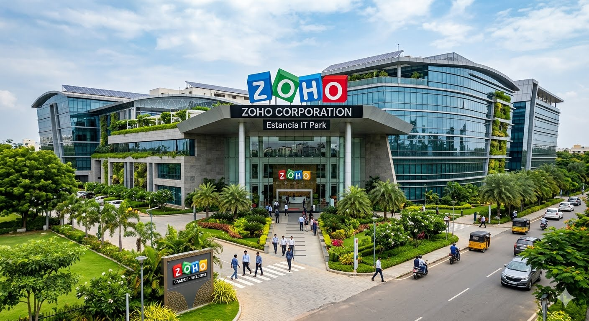

Zoho

Zoho Corporation, a global technology leader offering over 55 business software products, is headquartered in Chennai, Tamil Nadu, with its primary main campus located at Estancia IT Park on GST Road, Vallancherry.Technical Support Engineers: Handle inbound and outbound voice, email, and chat-based support, interact with prospects, provide product demos, and diagnose application issues for global clients.Software Developers/Engineers: Build, scale, and maintain Zoho's suite of products across cloud, mobile, and desktop environments (often working with custom scripts like Deluge).Sales & Marketing Executives: Build customer rapport, map product capabilities to business requirements, and guide leads through the sales pipeline.